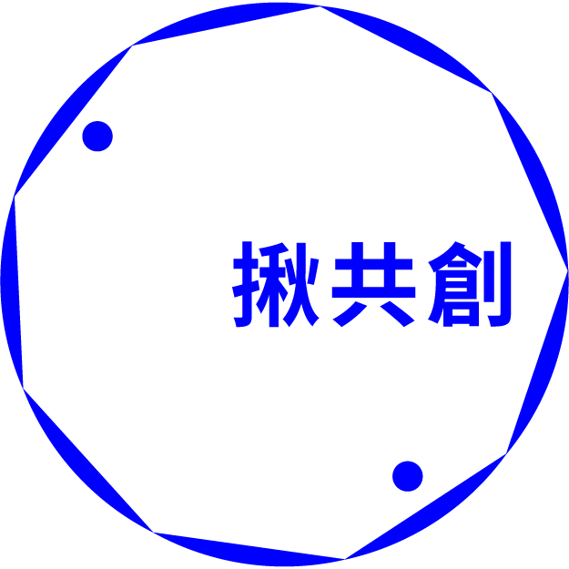

揪共創 Co-Creating
舊屋力
曾經是阿里山林場轉運中心的嘉義市，因為這獨特的歷史脈絡，至今整個城區保留了約6000棟木造建築，堪稱嘉義的「第二座森林」，更是嘉義市獨一無二的文化資產。
為保存、推廣與活化這些具有濃濃故事的特色老屋，形塑「木都」意象，嘉義市政府文化局針對民國60年以前的老屋提出「舊屋力」、「老屋卸妝」補助計畫，官方、學界、產業界、NGO與民間一起來修繕老屋木屋，鼓勵創意經營，讓長年破損的閒置老屋，再現當代亮麗風華。


從103年到112年，舊屋力與老屋卸妝累積超過180案推動老木屋華麗轉身，美麗的老屋可能是甜點咖啡屋、可能是特色博物館，不僅成為觀光亮點，更讓愛老屋、修木屋，成為一種氛圍、一種文化。

113年起，舊屋力邁入第11年，從木都2.0到木都3.0，嘉義市要更美、更好。嘉義市推出舊屋力永續創新提案競賽，邀請全國高手將最新木構設計導入嘉義市，讓老木屋有新靈魂，同時讓舊屋力轉骨，以永續創新提案競賽讓全國看見嘉義市木文化、木美學。首次登場的舊屋力永續創新提案競賽，獲得極高好評。評審團認為本次競賽質與量均優，讓人驚艷；運用新式木構造、材料、工法創造了老屋好生活的全新想像，老建築加上新技術，正是嘉義木都3.0的充沛能量。同時，人才更是本次競賽的重點，不僅全國大專院校、高中職熱烈參與，社會組還有法國設計師、日本建築師投件角逐，儼然已有國際競圖架式，而這些熱愛嘉義老屋的團隊與人才，都將是嘉義木都持續前進最重要的力量！木都嘉義的美，閃閃發光。
獲獎紀錄：
嘉義市舊有建築活化再利用計畫（舊屋力計畫）
・2024第十一屆台灣景觀大獎／永續績效類優質獎
・今周刊「2024永續創新城市」／「嘉義市有座人文森林計畫」永續創新獎環境力優等。
| 主辦單位 ｜ | ｜ | 嘉義市政府文化局 |
|---|---|---|
| 合作單位 ｜ | ｜ | 南華大學、力譔堂整合行銷股份有限公司 |
| 暸解更多 ｜ | ｜ | 官方網站 |